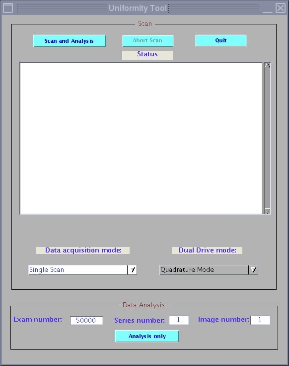

cd /usr/g/service/mclass/uniformity
touch .uniformity_enable
run_uniformity_tool
The Uniformity Tool screen (shown below) displays with the scan status and results.
| NOTE: | All buttons are inhibited during a scan. Only the [Abort Scan] button is available during a scan, but inhibited when Scan is idle. |
Illustration 3: Uniformity Tool Screen and Status
